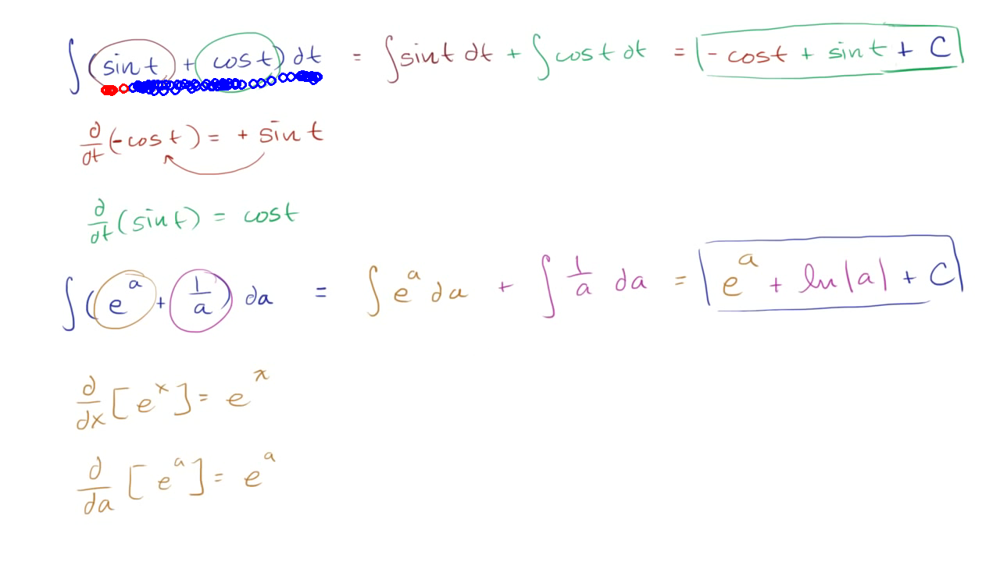
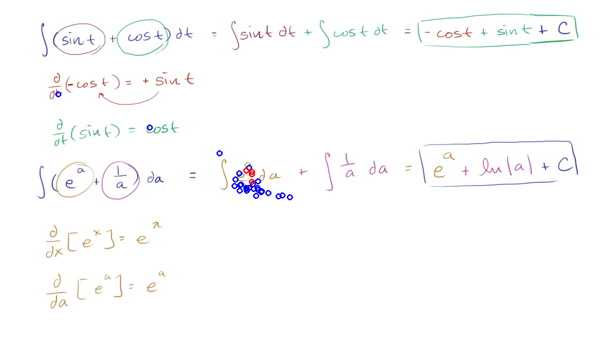

And so you would not write a dx here.

I thought I would do a few more examples of taking antiderivatives, just so we feel comfortable taking antiderivatives of all of the basic functions that we know how to take the derivatives of.
And on top of that, I just want to make it clear that it doesn't always have to be functions of x.
Here we have a function of t, and we're taking the antiderivative with respect to t.
And so you would not write a dx here.
That is not the notation.
You'll see why when we focus on definite integrals.
So what's the antiderivative of this business right over here.

Well, it's going to be the same thing as the antiderivative of sine of t, or the indefinite integral of sine of t, plus the indefinite integral, or the antiderivative, of cosine of t.
So let's think about what these antiderivatives are.
And we already know a little bit about taking the derivatives of trig functions.
We know that the derivative with respect to t of cosine of t is equal to negative sine of t.
So if we want a sine of t here, we would just have to take the derivative of negative cosine t.
If we take the derivative of negative cosine t, then we get positive sine of t.
The derivative with respect to t of cosine t is negative sine of t.
We have the negative out front.
It becomes positive sine of t.
So the antiderivative of sine of t is negative cosine of t.
So this is going to be equal to negative cosine of t.
And then what's the antiderivative of cosine of t?
Well, we already know that the derivative with respect to t of sine of t is equal to cosine of t.
So cosine of t's antiderivative is just sine of t-- so plus sine of t.
And we're done.
We've found the antiderivative.
Now let's tackle this.
Now we don't have a t.
We're taking the indefinite integral with respect to-- actually, this is a mistake.
This should be with respect to a.
Let me clean this up.
This should be a da.
If we were taking this with respect to t, then we would treat all of these things as just constants.
But I don't want to confuse you right now.
Let me make it clear.
This is going to be da.
That's what we are integrating or taking the antiderivative with respect to.
So what is this going to be equal to?
Well once again, we can rewrite it as the sum of integrals.
This is the indefinite integral of e to the a da, so this one right over here-- a d I'll do it in green-- plus the indefinite integral, or the antiderivative, of 1/a da.
Now, what is the antiderivative of e to the a?
Well, we already know a little bit about exponentials.
The derivative with respect to x of e to the x is equal to e to the x.
That's one of the reasons why e in the exponential function in general is so amazing.
And if we just replaced a with x or x with a, you get the derivative with respect to a of e to the a is equal to e to the a.
So the antiderivative here, the derivative of e to the a, the antiderivative is going to be e to the a.

And maybe you can shift it by some type of a constant.
Oh, and let me not forget, I have to put my constant right over here.
I could have a constant factor.
So let me-- always important.
Remember the constant.
So you have a constant factor right over here.
Never forget that.
I almost did.
So once again, over here, what's the antiderivative of e to the a?
It is e to the a.
What's the antiderivative of 1/a?
Well, we've seen that in the last video.
It is going to be the natural log of the absolute value of a.
And then we want to have the most general antiderivative, so there could be a constant factor out here as well.
And we are done.
We found the antiderivative of both of these expressions.